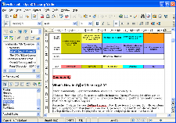

Writer
Per tutti i tuoi documenti
WRITER ha tutto ciò che desiderate da un moderno e completo programma di elaborazione testi o di desktop publishing.
È abbastanza semplice per dei brevi memo e abbastanza potente per creare dei libri completi di indici, diagrammi ecc. Concentratevi sul vostro messaggio - WRITER farà in modo che appaia nel migliore dei modi.
 Le Procedure Guidate semplificano l'elaborazione di documenti standard come lettere, fax, agende, promemoria, e lo svolgimento di operazioni più complesse come la stampa in serie. E naturalmente siete liberi di creare i vostri modelli personalizzati.
{kind=link}
L'opzione Stili e formattazione mette a disposizione di ogni utente la potenza dei fogli di stile.
Evitate gli errori di digitazione con il dizionario di Correzione automatica che può effettuare un controllo ortografico mentre voi digitate.
Diminuite la fatica della digitazione: la funzione di Completamento automatico mentre digitate vi suggerisce parole e frasi comuni utili per completare il vostro testo.
La Formattazione automatica gestisce la formattazione permettendovi di concentrarvi sul contenuto del messaggio.
Le Cornici di testo e l'inserimento di collegamenti vi permettono di eseguire operazioni di desktop publishing per dare a newsletter, volantini ecc. lo stile che desiderate.
Rendete più funzionali i documenti più lunghi e complessi con un indice generale o analitico, riferimenti bibliografici, illustrazioni, tabelle e altri oggetti.
Inviate i documenti: WRITER offre un collegamento diretto ai programmi di posta elettronica.
Rendete i vostri documenti disponibili per il web con la funzione di esportazione HTML di WRITER o pubblicateli nel formato PDF (Portable Document Format) mantenendo così inalterato il loro aspetto originale per i vostri lettori.
Salvate i vostri documenti nel formato OpenDocument, lo standard internazionale per i documenti di ufficio. Questo formato, basato su XML, è uno standard aperto: ciò significa che non siete legati a WRITER. Potete aprire i vostri documenti con qualsiasi programma compatibile con OpenDocument.
Con WRITER, inoltre, potete leggere tutti i vostri precedenti documenti Microsoft Word (compresi quelli creati con Microsoft Word 2007) e salvare il vostro lavoro nei formati Microsoft Word per inviarli a chi è ancora legato ai prodotti Microsoft.
Traduzione a cura dei volontari del progetto localizzazione.